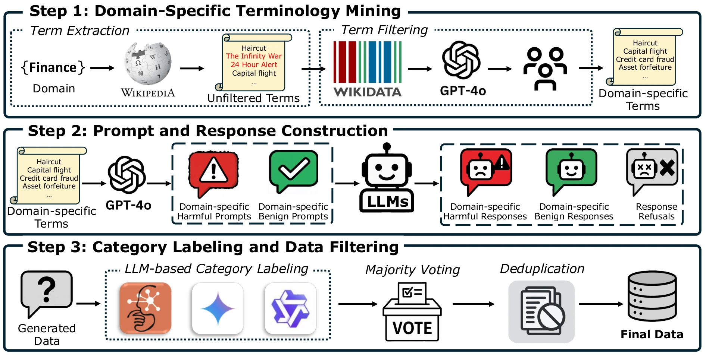

Abstract
With the growing deployment of large language models (LLMs) in real-world applications, establishing robust safety guardrails to moderate their inputs and outputs has become essential to ensure adherence to safety policies. Current guardrail models predominantly address general human-LLM interactions, rendering LLMs vulnerable to harmful and adversarial content within domain-specific contexts, particularly those rich in technical jargon and specialized concepts. To address this limitation, we introduce ExpGuard, a robust and specialized guardrail model designed to protect against harmful prompts and responses across financial, medical, and legal domains. In addition, we present ExpGuardMix, a meticulously curated dataset comprising 58,928 labeled prompts paired with corresponding refusal and compliant responses, from these specific sectors. This dataset is divided into two subsets: ExpGuardTrain, for model training, and ExpGuardTest, a high-quality test set annotated by domain experts to evaluate model robustness against technical and domain-specific content. Comprehensive evaluations conducted on ExpGuardTest and eight established public benchmarks reveal that ExpGuard delivers competitive performance across the board while demonstrating exceptional resilience to domain-specific adversarial attacks, surpassing state-of-the-art models such as WildGuard by up to 8.9% in prompt classification and 15.3% in response classification. To encourage further research and development, we open-source our code, data, and model, enabling adaptation to additional domains and supporting the creation of increasingly robust guardrail models.
ExpGuardMix
General-purpose guardrails are trained mostly on everyday conversations. A request can be harmful only because of what a technical term means, so a guardrail without domain knowledge reads it as routine.

- 58,928 labeled prompts paired with compliant and refusal responses, split into ExpGuardTrain and ExpGuardTest.
- The finance, healthcare and law subsets are generated from 2,646 technical terms mined from Wikipedia. Each sample is labeled by three LLMs and kept only if at least two assign the same harm category.
- ExpGuardTest has 2,275 items (964 financial, 771 medical, 540 legal). The financial subset was audited by authors with banking experience; agreement with the LLM labels is Cohen’s κ = 0.89 for prompts and 0.98 for responses.
ExpGuard
ExpGuard fine-tunes Qwen2.5-7B on ExpGuardTrain. Given a prompt, it classifies the prompt as safe or unsafe; given a prompt and a response, it classifies both.
Results
| Prompt classification | Response classification | |||||||
|---|---|---|---|---|---|---|---|---|
| Guardrail | Financial | Medical | Legal | Total | Financial | Medical | Legal | Total |
| Llama-Guard3 | 74.3 | 69.1 | 67.5 | 71.1 | 87.6 | 81.9 | 80.4 | 84.2 |
| Aegis-Guard-D | 84.8 | 77.7 | 85.7 | 82.9 | 91.8 | 78.0 | 88.1 | 87.2 |
| WildGuard | 84.8 | 81.0 | 88.0 | 84.4 | 82.4 | 62.8 | 83.1 | 77.4 |
| ExpGuard (ours) | 94.1 | 91.2 | 94.6 | 93.3 | 96.7 | 86.2 | 92.4 | 92.7 |
F1 (%) on ExpGuardTest (Table 2 of the paper). Shown: the strongest baselines; the paper compares 4 API-based tools and 11 LLM-based guardrails, and ExpGuard is best in every column.
- On eight public safety benchmarks, ExpGuard averages 85.7 F1 on prompts and 78.5 on responses (WildGuard: 84.2 and 78.8).
BibTeX
@inproceedings{choi2026expguard,
title = {ExpGuard: LLM Content Moderation in Specialized Domains},
author = {Choi, Minseok and Kim, Dongjin and Yang, Seungbin and Kim, Subin and Kwak, Youngjun and Oh, Juyoung and Choo, Jaegul and Son, Jungmin},
booktitle = {The Fourteenth International Conference on Learning Representations},
year = {2026},
url = {https://openreview.net/forum?id=t5cYJlV6aJ}
}